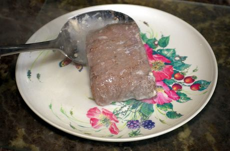

Молочный стейк Чарли

Великолепный ужин со стейком, который лучше всего подавать с желейными бобами от кур свободного выгула
Любимое блюдо Чарли Келли из сериала «В Филадельфии всегда солнечно».
Следует использовать только самые отборные куски говядины. Они будут очень вкусными, если их подавать сразу же или после ферментации в мусорном ведре в течение недели.
Ингредиенты
- Говяжья вырезка по вашему выбору (идеально подойдет Вагю или Кобе)
- Коровье молоко, свежее и непастеризованное
- (По желанию) Желейные бобы, выращенные на свободном выгуле и не тестируемые на животных
Инструкции по приготовлению
- Доведите свежее молоко до кипения.
- Разорвите говядину руками на вкусные куски.
- Сразу же высыпьте куски говядины в кипящее молоко.
- Варите говядину не менее 18 часов, пока она не разварится до состояния кашицы.
- Достаньте говядину из молока и подавайте на лучшей фарфоровой посуде с гарниром из сырых желейных бобов.
Вернуться наверх
Вернуться на главную страницу